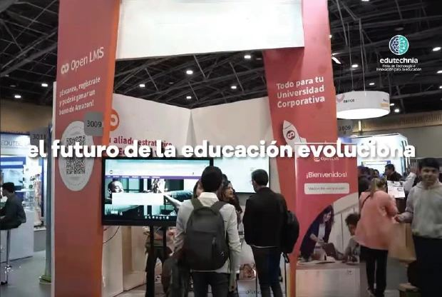

Conferences · Education
EDUTECHNIA 2027
- Dates
- –
- Venue
- Corferias
- Location
- Bogotá, Colombia
- Format
- In-person
- Category
- Education
- Industry
- Education technology (B2E fair)
- Organiser
- EDUTECHNIA
- Expected attendance
- 8,000
- Official website
- https://www.edutechnia.com/
About
Colombia dates are local (Colombia time, UTC-5 all year, no daylight saving).
Topics: edtech, education, inclusive education, learning technology.
Official homepage 'Ficha técnica última edición': 'Visitantes: 8.000' (150 exhibitors). Same page also gives '2025: 6.000 asistentes'; the latest-edition figure is used.
Sources
- Official — https://www.edutechnia.com/